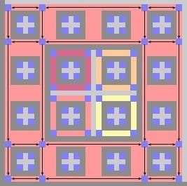
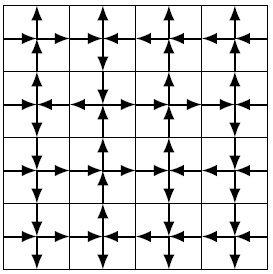

Work group on exact computations of topological entropy of multidimensional subshifts of finite type

Silvère Gangloff
2018-2019. Post-doctoral researcher at LIP, ENS Lyon,
working with
Nathalie Aubrun and
Michael Rao in the ANR project CoCoGro.
2015-2018. Ph.D. in Mathematics and Theoretical computer
science: Algorithmic complexity
of growth-type invariants of multidimensional SFT under
dynamical constraints, under supervision of
Mathieu Sablik.
2011-2015. ENS Paris: Studies in mathematics,
biology, and history ; Master of mathematics;
Agrégation de mathématiques.
More details:
Curiculum vitae.
Mail: first.last@gmx.com

Work group on exact computations of topological entropy of multidimensional subshifts of finite type
This work group aims at studying exact computations of entropies in statistical physics and provide rigorous tools in order to support
the predictions. Moreover, it aims at understanding the conditions of computability (in exact and algorithmic
sense) of entropy in multidimensions, without consideration for the physical meaning of the SFT. Thus, we
include in our consideration some examples coming from symbolic dynamics, as the Kari-Culik aperiodic shift.
It takes place in the LIP at the ENS Lyon, every other week approximately.
The next session will be the 18th of January, 11:00 AM.
Session programs:
January 18th: 11h00-12h00: Entropy of coverable subshifts [Benjamin Hellouin]. Salle M7.315.
Abstract:
Permutations de Z^2 à mouvement borné:
Il existe quelques méthodes pour définir des SFT "simples" : l'une d'entre elles est de considérer les permutations $\pi$ de $\mathbb Z^2$ à mouvement borné, c'est-à-dire tel que $\pi(n)-n$ appartient à un ensemble fini fixé. En colorant la cellule $n$ avec le symbole $\pi(n)-n$, on obtient un SFT multidimensionnel avec une structure combinatoire riche. L'orbite de chaque point de $\mathbb Z^2$ forme un chemin et l'ensemble de ces chemins partitionne le plan (cela rappelle les chemins de la preuve de Lieb). Des méthodes combinatoires classiques sur les chemins permettent de calculer l'entropie dans certains cas.
Il s'agit d'une approche récente, peu connue (un seul article non cité), et on peut espérer calculer l'entropie sur de nouveaux exemples.
Référence
Archives:
October 5th: 10h-11h: Exposition of the computation of entropy of square ice [Silvère Gangloff], salle M7.315.
Slides.
Bibliography:
- Computation of entropy:
Residual entropy of square ice, E.H. Lieb.
- Technical tools:
One-Dimensional Chain of Anisotropic Spin-Spin Interactions. I.
Proof of Bethe's Hypothesis for Ground State in a Finite System, C.N. Yang, C.P. Yang.
One-Dimensional Chain of Anisotropic Spin-Spin Interactions. II.
Properties of the Ground-State Energy Per Lattice Site for an Infinite System, C.N. Yang, C.P. Yang.
- Computation of weighted entropy:
Discontinuity of the phase transition for the planar random-cluster and Potts models with q>4,
H. Duminil-Copin, M. Gagnebin, M. Harel, I. Manolescu, V. Tassion.
- The Bethe ansatz:
The Bethe ansatz for the six-vertex and XXZ models: an exposition,
H. Duminil-Copin, M. Gagnebin, M. Harel, I. Manolescu, V. Tassion.
October 26th: 13h30-14h30: Entropy of coverable subshifts [Guilhem Gamard]. Salle M7.315.
Slides
Abstract:
In the last 20 years, Penrose tilings have attracted the attention of
physicists because it models the structure of quasicrystals [0].
Penrose tilings are usually described as tesselations of the Euclidian
plane with two pieces, for instance a kite and a dart with specific
angles. However, this description is not satisfactory for physics,
because it does not explain why molecules would assemble following
this specific pattern.
Another description of Penrose tilings was published in [1]: there
exists a single dodecahedron D (with decorations), such that the set
of Penrose tilings is the set of *coverings* of the plane by D. In a
covering, by contrast with a tesselation, tiles may overlap each
other; but two overlapping tiles should have exactly the same
decorations in their area of intersection. In other terms, two tiles
can overlap if and only if they can be superimposed.
This new description is more satisfactory from the point of view of
physics, because the tile D may represent a local configuration of
minimal energy. Thus quasicrystals would simply be configurations of
locally minimal energy.
In a parallel direction of research, coverable 1D subshifts were
considered in [2]. An infinite word w is coverable if there exists a
finite word q, such that w is covered with occurrences of q, possibly
overlapping. A 1D subshift is coverable, or quasiperiodic, if all its
points are coverable. We have an upper bound on the entropy of
quasiperiodic subshifts that depend on the longest quasiperiod [3]; if
there are infinitely many quasiperiods, then the entropy is zero.
Finally, quasiperiodic 2D subshifts were considered in [4]. Some
conditions on the quasiperiods imply entropy zero, but it seems out of
reach to generalize the upper bound from [3] to 2D subshifts.
In this talk, I will review what is known about the entropy of
quasiperiodic subshifts, mostly from papers [2, 3, 4] and possibly a
bit of unpublished work if time allows it.
Bibliography:
[0] D. Shechtman, I. Blech, D. Gratias, J. Cahn.
Metallic Phase with Long-Range Orientational Order and No Translational Symmetry.
Physical Review Letters 53(20), pp. 1951–1953, 1984.
[1] Petra Gummelt.
Penrose tilings as coverings of congruent decagons.
Geometriae Dedicata 62, pp. 1–17, 1996.
[2] Thierry Monteil, Solomon Marcus.
Quasiperiodic infinite words : multi-scale case and dynamical properties.
2006.
[3] Ronney Polley, Ludwig Staiger.
Quasiperiods, Subword Complexity and
the Smallest Pisot Number.
Journal of Automata, Languages and Combinatorics 21(1-2), pp. 93–106, 2016.
[4] Guilhem Gamard, Gwenaël Richomme.
Comparison of Coverability and Multi-Scale Coverability in One and Two Dimensions.
To appear in Journal of Computer and System Sciences.